Gallery
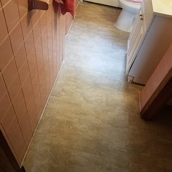 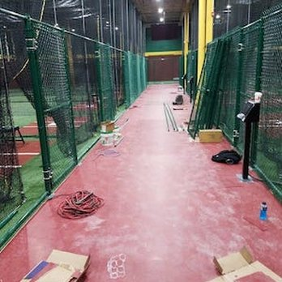 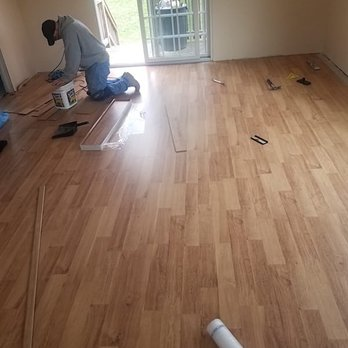
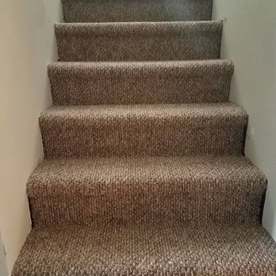
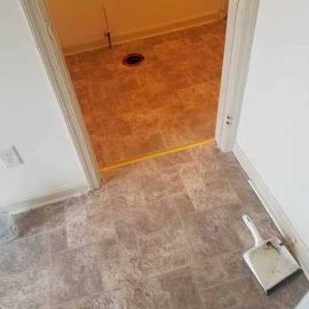
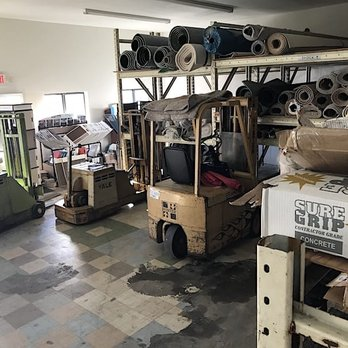
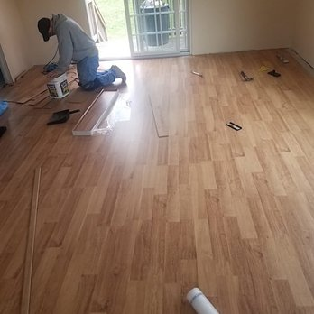
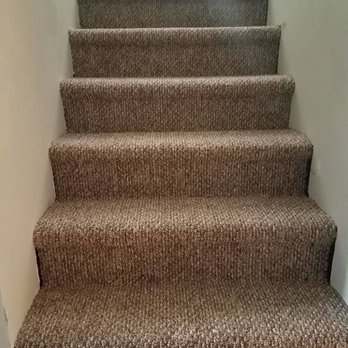
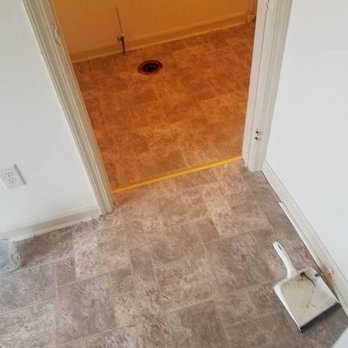
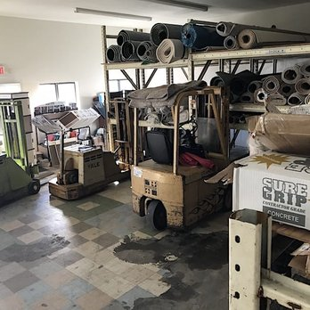
Hello, we are the Olahs, Bob Sr. and Jr., and Fairfield County Floor Covering Inc. is our family-owned business, continuously operated for more than 50 years now. That makes us one of the most experienced carpet, hardwood, vinyl and tile flooring companies in Connecticut. We enjoy what we do. We take care of our customers. Every job is treated as if it is being installed in our homes: jobs of every size, residential or commercial, repair or service, we truly care. We take your side. We take the time to understand your desires and needs. Have a budget? Want something exotic? Simply need a small repair? Call us today.
Carpet intallation, removal, ...
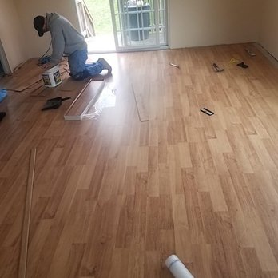
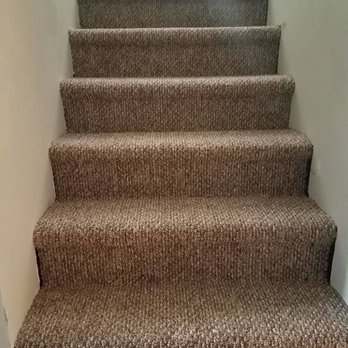
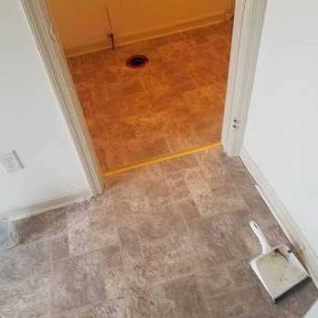
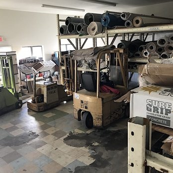
""
Call us for a free, no-obligation estimate:
Email: blank@blank.com